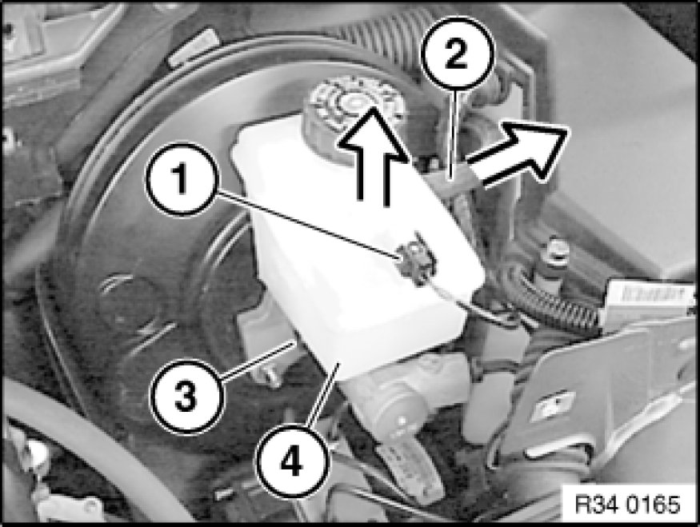
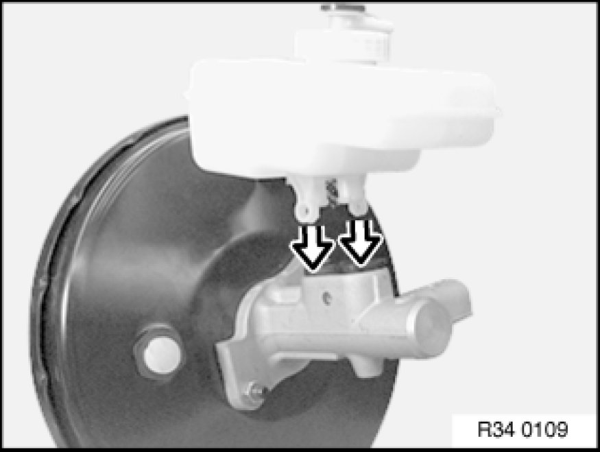

Removing and Installing/Replacing Expansion Tank for Hydraulic Brake Actuation
34 31 181 - Removing and installing / replacing expansion tank for hydraulic brake actuation

Necessary preliminary tasks:
- Follow general instructions Service and Repair:
- Remove left partition wall for equipment compartment.
- Remove non-return valve Service and Repair from brake booster.
- After completing tasks, bleed brake system Bleeding Brake System with DSC.
Note:
Extract brake fluid out of expansion tank. Use a suction bottle used exclusively for drawing off brake fluid.
Do not reuse drawn out brake fluid.

Unfasten plug connection (1) and disconnect.
Pull off supply hose (2) of clutch hydraulic system if necessary.
Release retaining screw (3).
Pull expansion tank (4) vertically out of brake master cylinder.
Installation:
Tightening torque 34 31 3AZ 34 31 Brake Master Cylinder.

Important!
Check rubber plug in brake master cylinder for damage and replace if necessary.
Push the expansion tank vertically onto the master brake cylinder.